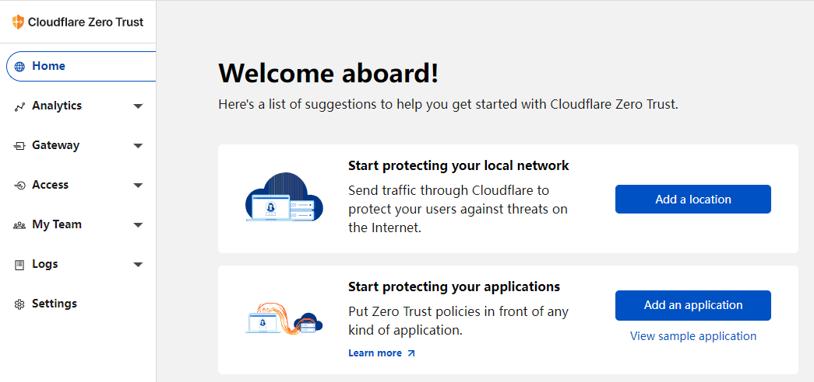
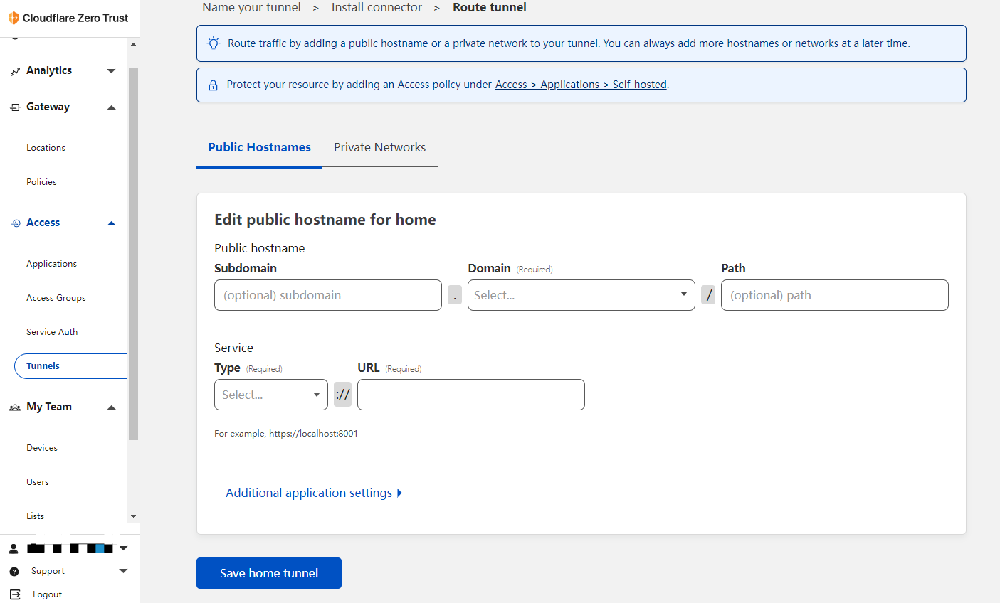

Cloudflare Zero Trust 内网穿透
Cloudflare Zero Trust 内网穿透
最快的 Zero Trust 应用访问和互联网浏览平台
增加可见性，消除复杂性，降低远程和办公室用户的风险。杜绝数据丢失、恶意软件和网络钓鱼，保护用户、应用程序和设备安全。
使用 Tunnel 隧道来实现内网传统，实现内网访问各类应用
安装部署
https://dash.teams.cloudflare.com/
Docker 部署
在 docker 环境运行 <token> 是你个人令牌
docker run -d --name cloudflared cloudflare/cloudflared:latest tunnel --no-autoupdate run --token <token>
Linux 部署
- X86-64 位
curl -L --output cloudflared.rpm https://github.com/cloudflare/cloudflared/releases/latest/download/cloudflared-linux-x86_64.rpm && \
sudo yum localinstall -y cloudflared.rpm && \
sudo cloudflared service install <token>
- X86-32 位
curl -L --output cloudflared.rpm https://github.com/cloudflare/cloudflared/releases/latest/download/cloudflared-linux-386.rpm &&
sudo yum localinstall -y cloudflared.rpm &&
sudo cloudflared service install <token>
- arm64
curl -L --output cloudflared.rpm https://github.com/cloudflare/cloudflared/releases/latest/download/cloudflared-linux-aarch64.rpm &&
sudo yum localinstall -y cloudflared.rpm &&
sudo cloudflared service install <token>
- arm32
curl -L --output cloudflared.rpm https://github.com/cloudflare/cloudflared/releases/latest/download/cloudflared-linux-arm.rpm &&
sudo yum localinstall -y cloudflared.rpm &&
sudo cloudflared service install <token>
windows 部署
- 下载 https://github.com/cloudflare/cloudflared/releases/latest/download/cloudflared-windows-amd64.msi
- 运行安装程序
- 以管理员身份打开命令提示符
- 运行以下命令
cloudflared.exe service install <token>
在 cloudflare 里配置内网穿透

欢迎关注我的博客www.jobcher.com